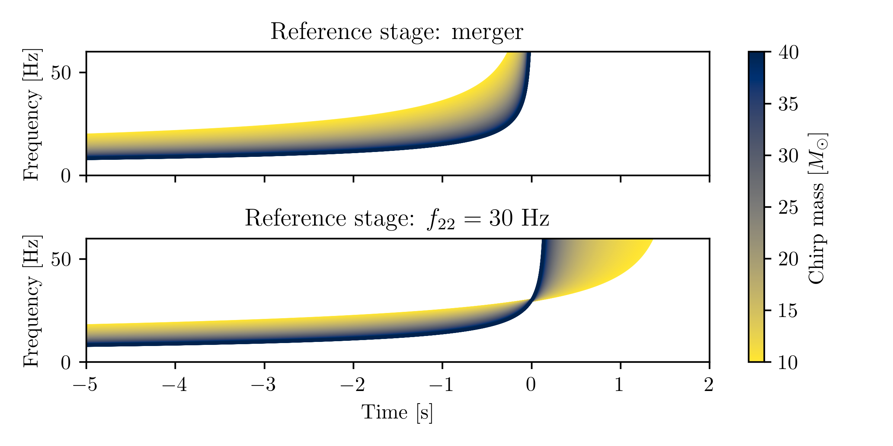
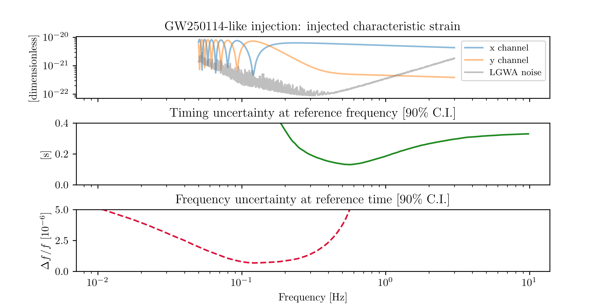

2026-05-20
Measuring seismic motion at 4 locations inside a lunar crater, with cryogenics and seismic noise cancellation.
The merger time is out of band!
Instead, we can use \(t_{22}(f)\); the optimum is for \(f\approx 0.56\) Hz.


From merger time samples at a location \(r_0\), we obtain samples of time measured at a frequency \(f\) and location \(r\) by:
\[ t_{i}^{f, r} = t_{i}^{\text{mrg}, r_0} - \frac{(r-r_0 ) \cdot \hat{n}_{i}}{c} + \frac{1}{2 \pi} \frac{ \text{d} \varphi_{22}(f; \theta_i)}{ \text{d} f} \]
At any given frequency \(f\) we can compute
\[r_{\text{min}}(f) = \text{argmin}_r \text{var}(t_i^{f, r}) \]
| Likelihood evaluations | Sampling time [min] | Timing uncertainty [s] | Prior width [s] | Sampler | Center |
|---|---|---|---|---|---|
| 91515 | 3 | 0.075 | 0.5 | nessai |
optimal |
| 107878 | 3.6 | 0.075 | 27 | nessai |
optimal |
| 659816 | 16.7 | 4.733 | 27 | nessai |
SSB |
| 806067 | 16.8 | 0.074 | 0.5 | dynesty |
optimal |
| 1530906 | 33 | 0.076 | 27 | dynesty |
optimal |
| 9144813 | 198.6 | 4.766 | 27 | dynesty |
SSB |
Intrinsic parameters:
Extrinsic parameters:
Sky localization modes for high mass
(\(150 M_{\odot} \lesssim \mathcal{M} \leq 1100 M_{\odot}\))
and distant (\(D_L \gtrsim 6 \text{Gpc}\)) BBH.
{kind=link}
{kind=link}
{kind=link}
{kind=link}
{kind=link}
{kind=link}
{kind=link}
{kind=link}